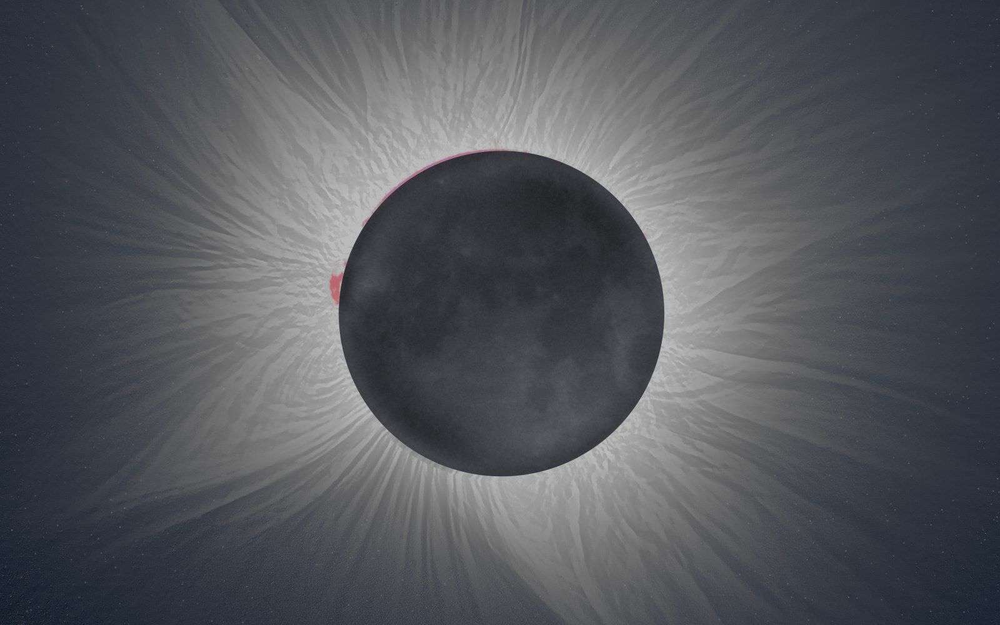
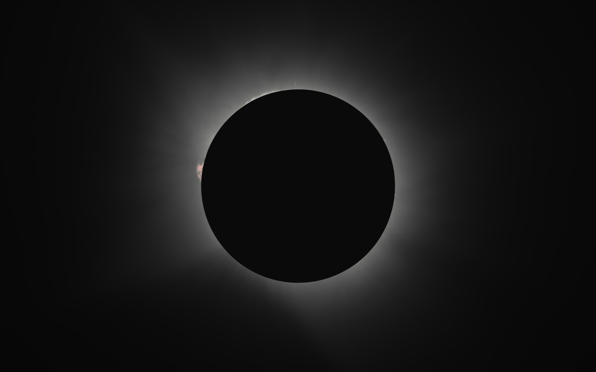
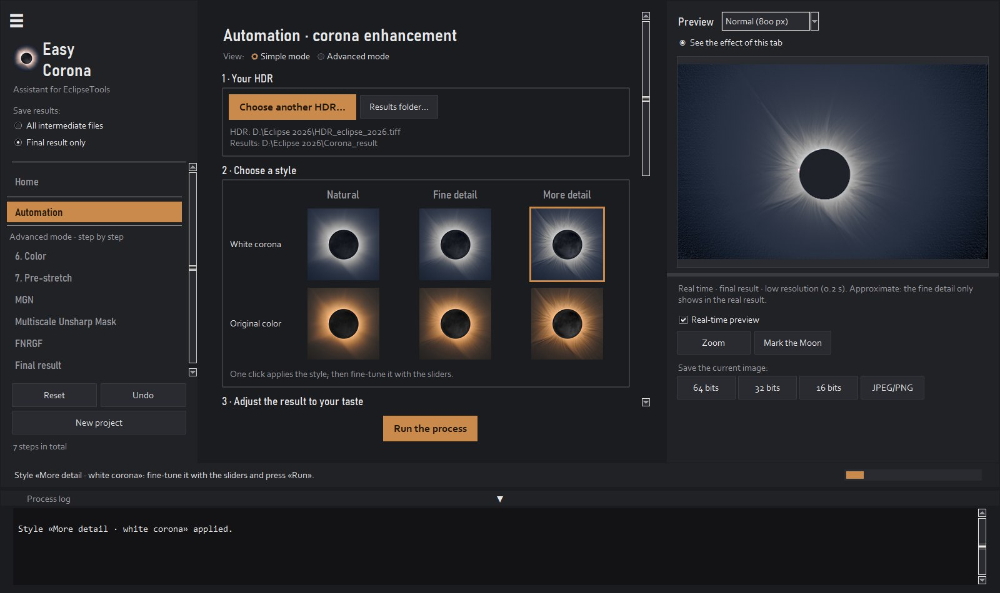

Free
To try it with your photos.
€0
- Every feature, to see the result
- Images at 1200 px, with a watermark
- Practice photos by zu2pic, if you don't have yours yet
- Doesn't save or export images
For total eclipse photos
Easy Corona merges all your totality exposures into an HDR and brings out the filaments of the corona. No layers, no masks and no Photoshop.
Windows 10 and 11 · macOS 15 or later · in English and Spanish · version 1.4.1
Photo: Iker Zubizarreta
Why you need it
During totality the corona is thousands of times brighter next to the Moon than in its distant streamers. That is why you shoot a series, from fractions of a millisecond to a second.

1 HDRThe short ones keep the Moon's edge and the prominences; in the long ones those are already burned out.
The long ones capture the distant streamers, which don't even show up in the short ones.
Easy Corona aligns them on the Moon, stacks them into a 32-bit HDR and enhances the fine detail all the way out.
Before and after
On the left, the HDR as it comes out of the stacking. On the right, the same HDR after Easy Corona.

HDR as is With Easy CoronaWhat it does
Align
Aligns every exposure even if the tripod moved or the mount didn't track well.
Stack
Combines all the exposures into one image with the full range of the corona.
Enhance
Multiscale filters (MGN and WOW) that reveal filaments that no single photo shows.
Color
The measured blue of the sky during totality, and the Moon in a uniform gray.
Chromosphere
The fastest photos are stacked separately and added at the end, with no ghosts on the Moon's edge.
Moon
The lunar maria, lit by the Earth, from your long photos or from the HDR itself.
Beta
Finds the stars, removes the dark ring the filters leave around them (and the hot pixels) and puts them back with the brightness and the number you choose, or removes them for a clean sky. With their mask, for other programs.
Beta
Merges the photos from two lenses: the detail of the long one with the field of the short one.
Cameras
Canon, Nikon, Sony, Fujifilm, Panasonic, Olympus, Pentax and DNG. Darks, bias and flats too.
Preview
Every slider shows up instantly, with the same calculation as the final result.
Practice
A real eclipse, the 2026 one, as RAW files or as a ready-made HDR, to learn before using your own photos.
Languages
The app opens in your computer's language, and you can change it in a menu.
How it works
The app reads the exposure of each RAW file and groups them by itself.
It aligns, averages and stacks. If you already have an HDR from another program, start at step 3.
A few sliders in the Simple mode; full control in the Advanced mode. Save as 16- or 32-bit TIFF, PNG or JPEG.

Versions
The free version does everything at reduced resolution. When you see your corona, choose yours.
To try it with your photos.
€0
To get your corona in one click.
€19.99one-time payment
The full one
For those who want to control every step.
€49.99one-time payment
Already have Premium? Move up to Premium+ by paying only the difference: €30.00. In the app: License menu → Upgrade to Premium+.
Upgrade to Premium+One app for the three versions: it downloads for free and, when you buy, it is activated with the key you receive by email · license for one computer · one year of updates included
Requirements
For macOS 15 Sequoia or later. There is a download for each type of Mac: check it in the Apple menu → About This Mac.
Open the .dmg and drag EasyCorona to Applications. The first time, macOS asks for permission to open it (see “macOS won't open the app” in the FAQ).
A series of exposures of totality, in RAW or TIFF, ideally on a tripod and from 1/4000 s to 1 s. The more photos of each exposure, the less noise. An HDR already made in another program also works.
It is the usual warning for new programs from small developers. To install:
The first time, macOS warns that it couldn't verify Easy Corona, because it is a new program from a small developer. To open it:
It is only needed the first time.
After the purchase you receive a key by email. In the app: License → Activate license menu and paste the key. The check works without internet.
Each license is for one computer. If you change computers, uninstall it from the old one and activate it on the new one.
The app keeps working forever with the last version included. Only new versions released afterwards may ask for a renewal.
No. All the processing happens on your computer and the app doesn't send any data.
That's what the free version is for: try it first with your own photos. The full terms are in the license agreement.
English and Spanish. It opens in the language of your computer, and you can change it in the View → Idioma · Language menu.